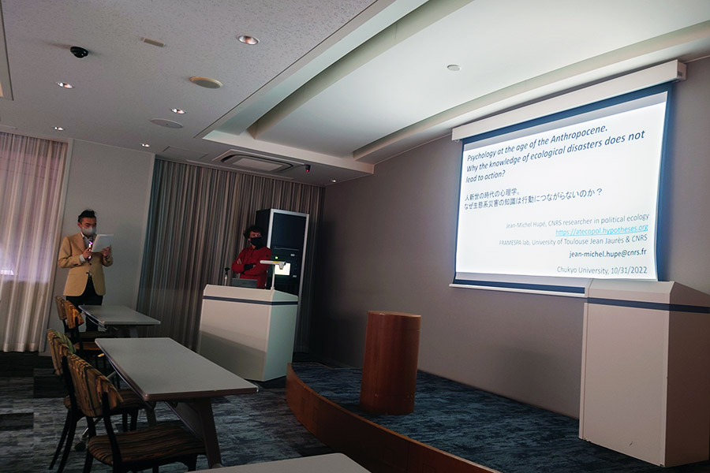
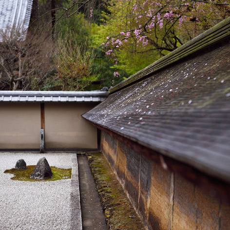

心理学部 学術講演会（2022年10月）
Speaker: Dr. Jean-Michel Hupé (University of Toulouse Jean Jaurès and CNRS)
Title: Psychology at the age of the Anthropocene. Why the knowledge of ecological disasters does not lead to action?
Photos

心理学部 学術講演会（2022年7月 ウェビナー開催）
Speaker: Dr. Hao Tam Ho (École normale supérieure and Chukyo Universtiy)
Title: Decision Bias and Alpha Oscillation

特集号「人間の時間知覚」
This Collection of Scientific Reports focuses on the malleability and fluidity of human time perception. Specifically, why the perceived temporal order of events, as well as their duration, can be easily affected and distorted by various factors, including emotional states, feelings of control, or perceived causality. This Collection welcomes research providing insight into this malleability, as well as that which explores individual differences in time perception, in both the neurotypical population, as well as individuals with psychiatric disorders, in which imprecise or atypical patterns of temporal processing might be a feature of the disorder or an underlying reason for other symptoms. The Collection Guest Editors are Elena Gheorghiu, Hirohito Kondo, and Ana Pinheiro.
Extended Deadline: the End of December 2022
心理学部 学術講演会（2021年5月 ウェビナー開催）
Speaker: Dr. Ken Kihara (National Institute of Advanced Industrial Science and Technology)
Title: Psychology and Autonomous Driving
心理学部 学術講演会（2020年10月 ウェビナー開催）
Speaker: Prof. Hideyuki Ando (Osaka University of Arts and Osaka University)
Title: Media Art and Psychology
テレビ出演（2020年9月）
Lab members, Hirohito Kondo, Kanae Tada, and Ryuju Hasegawa, were interviewed for the BS Fuji TV program "GALILEO X" in August 2020.
The title of the program is "What is Sound to Us ?"
We demonstrated the preliminary results of our study on autonomous sensory meridian response (ASMR) and misophonia.
Dr. Manabu Honda and
Dr. Masahiro Kumeta
also appeared. The trailer is below.
舞台裏
心理学部 学術講演会（2019年12月 / 2020年1月）
We invited two guest speakers to lectures in December 2019 and January 2020.
***
Speaker: Dr. I-Fan Lin (Taipei Medical Universtiy and Shuang Ho Hospital)
Title: Psychological Research on People with Autism
***
Speaker: Dr. Takahiro Ezaki (JST and The Universtiy of Tokyo)
Title: Energy Landscape Analysis of Neuroimaging Data
Photos
特集号「視聴覚の情景分析」（2017年2月掲載）
The Special Issue of
Philosophical Transactions of the Royal Socciety B
covers advances on scene-analysis research with a combination of psychophysics, neuroimaging,
neurophysiology, and computational modelling and presents new directions in empirical and theoretical approaches.
For an integrative understanding of scene analysis beyond sensory modalities, we have collected contributing articles
from 20 Principal Investigators (research topics).
The collection of articles compares recent findings in auditory and visual scene analysis.
The issue was edited by Hirohito Kondo,
Jun Kawahara,
Anouk van Loon, and
Brian Moore and
published in February 2017.
| Discipline | Auditory Science | Visual Science |
|---|---|---|
| Behavior | Elhilali (attention) Shamma & Oxenham (temporal coherence) Pressnitzer (music) |
Hillstrom (visual search) |
| Neuroimaging | Chait & Friston (attention) Gutschalk (consciousness) |
Baker (scene recognition) Muckli (contextual modulation) |
| Neuropharmacology | Kondo & Winkler (auditory multistability) | Takeuchi (visual motion) |
| Neurophysiology | Itatani & Klump (auditory streaming) | Yoshida & Hafed (salience) |
| Clinical | Lin & Kashino (autistic spectrum disorder) | |
| Modeling | Cichy (neurodynamics) | |
Scene Analysis of Ryoan-ji Temple in Kyoto

CNRS-NTT 合同セミナー（2016年6月）

The seminar, entitled "Theoretical and Experimental Approaches Towards Auditory Scene Analysis", was held at the Château de Bourron-Marlotte Fontainebleau in France. The closed meeting was organized by Daniel Pressniter (CNRS) and Hirohito Kondo (NTT) in June 2016 and supported by JSPS Bilateral Programs. More than twenty researchers, including postdocs and PhD students, participated in this seminar to build an integrated theory of auditory scene analysis from findings of different disciplines. Each participant gave a 30-min presentation on his/her research theme. The presentations covered a wide range of topics including psychophysical, neuroimaging, neurophysiological, and mathematical modeling studies. The lectures contained unpublished data, which led to a lively question and answer session. The participants spent all three days in a suburban facility outside the bustle of Paris, which fostered in-depth discussion outside of the scheduled program. We will continue to actively support young researchers and promote information exchange for collaborative research.
Photos in Fontainebleau